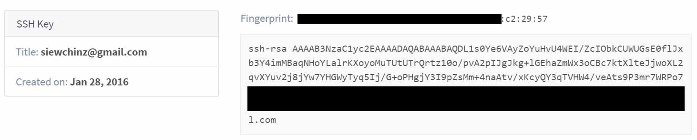

Exercise 01 Principles and practices, project management
Requirement
- Build a personal site describing you and your final project and upload to Git repository.
- Plan and sketch a potential semester project and add it to your website.
- Do a Git tutorial.
HTML Editing Tool
I am using an existing web template to build my website. The tool I use to edit the webpages and update the content is Sublime Text. I like the fact it is able to predict the commands as I type and I was able to change the color scheme to my preference. And it is free. Sublime Text can be used in Windows, Mac and Linux platform.
Learning about Gitlab and Command line
I am working on my project using a Windows 10 notebook. The windows version of Git can be found here. After reading some tutorial and guides on Gitlab and command lines, I found this simplified guide and this cheat sheet to be most helpful. It is important to note when using terminal that you must be in your local working directory before executing the commands.
$ ssh-keygen -t rsa -C "yourname@youremail.com"Cloning the repository to my local drive:
$ git clone git@git.fabacademy.org:fabacademy2016/fablabsingapore.gitTo push updated files back to the repository involves these commands in the following order:
$ git pull $ git add * $ git commit -m "updated files" $ git push

Learning points
Initially, I created the directories and uploaded my files to repository using the Web GUI of the Gitlab. It did not occur to me that my folder was case-sensitive. I only noticed it when the page did not load properly and I had to create another folder in lowercase. Windows and Mac systems are unable to properly remove the directory Media. The way to repair such a repository is to check out on a case-sensitive Unix system, remove the problematic element and commit it again. My colleague, Steven Chew helped me resolve this issue using a Linux system.

Project Management
Neil mentioned a few project management tips to help turn in our work on time. I have found that Trello to be a good tool to keep track of things that I need to do for the week.
References